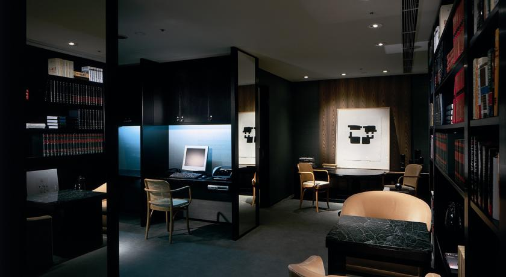
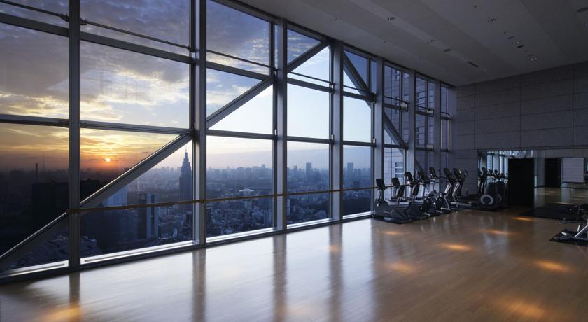
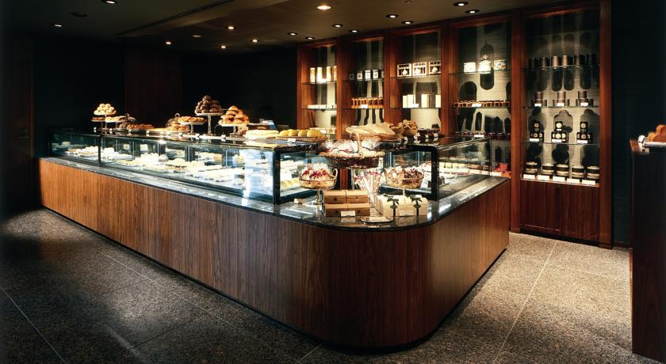
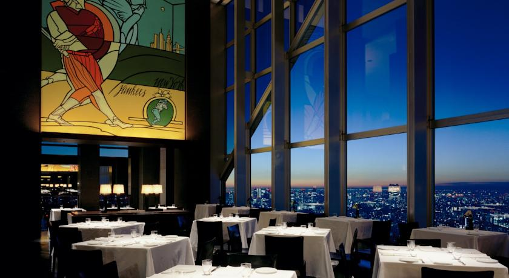
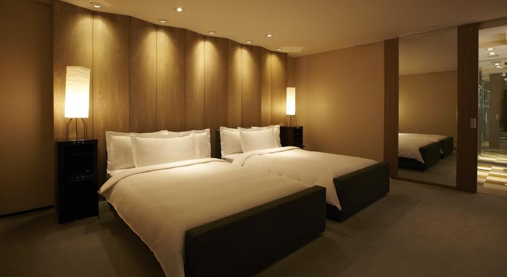

Park Hyatt Tokyo






Окна просторных номеров отеля Park Hyatt Tokyo расположены высоко над оживленными улицами Синдзюку. Из номеров открывается прекрасный вид на гору Фудзи и Синдзюку. В отеле есть крытый бассейн, а также ресторан на 52 этаже.
Номера в отеле Park Hyatt Tokyo могут похвастаться оформлением с деревянными панелями Хоккайдо и бельем из египетского хлопка. Гости могут выпить в баре с закусками и напитками в номере, а также расслабиться в глубокой ванне или завернуться в пушистый халат и посмотреть один из фильмов, которые предлагаются по запросу.
До Центрального парка - 3 минуты ходьбы от отеля. Железнодорожный вокзал Синдзюку находится в 15 минутах ходьбы от отеля. Парк Синдзюку Гиоен расположен в 20 минутах ходьбы.
Гости могут наслаждаться массажем в спа-салоне Club on the Park или позаниматься спортом в тренажерном зале, где есть окна от пола до потолка. К вашим услугам обширная библиотека отеля.
Из ресторана New York Grill на 52 этаже открывается превосходный вид на горизонт. Гостям подаются современные блюда японской и французской кухни. Также вы можете посетить стильное кафе.
Park Hyatt Tokyo — принимает гостей с 26 окт. 2009
Номеров в отеле: 177, Сеть отелей: Park Hyatt